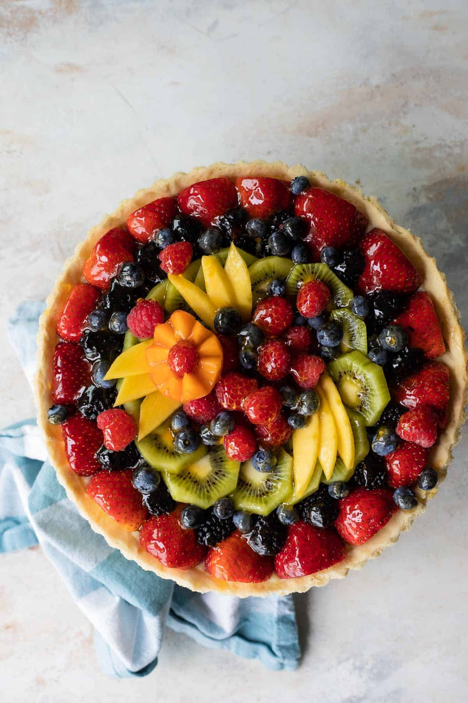

Home
Fruit Tart

Tasty fruit tart
Ingredients
For the pastry cream:
- 2 cups whole milk
- 1 cup granulated sugar
- 6 egg yolks
- 1/4 cup cornstarch
- 1/4 teaspoon salt
- 1 teaspoon vanilla extract
For the tart dough:
- 7 tablespoons butter softened
- 1/2 cup butter softened
- 1 egg
- 1/2 teaspoon vanilla extract
- 1/4 teaspoon salt
- 1 1/4 cups all-purpose flour sifted
- 1/4 teaspoon baking powder
For the fruit tart:
- 1 pint fresh cut fruit
- Apricot jam, melted
Steps
For the pastry cream:
- In a medium non-aluminum saucepan over medium heat, heat milk until
tiny bubbles appear on the surface, about 6 to 8 minutes (180 degrees).
Stir to prevent scalding.
- In a large bowl, whisk together egg yolks and sugar. Whisk in cornstarch
and salt. While whisking constantly, pur in half of the hot milk. Whisk
in remaining hot milk and return to saucepan.
- Cook over medium heat, whisking constantly, until the mixture thickens to a firm consistency,
about 5 to 8 minutes. Whisk in vanilla and pour in to a bowl.
- Cover with plastic wrap, pressing it directly on to the surface of the pastry cream
. Refrigerate until chilled, about 2 to 3 hours.
To make the tart dough:
- In a stand mixer fit with the paddle attachment, or with an electric mixer by hand, cream the
butter and powdered sugar together on medium-high speed
until pale and fluffy, about 3 minutes.
- Scrape down the sides of the bowl and add egg. Continue mixing until combined, scraping down the bowl
as necessary. Add vanilla and salt and mix until combined.
- Reduce mixer speed to low. Add flour and baking powder and blend until the dough
comes together (do not over-mix). Scrape dough onto a piece of plastic wrap.
Wrap tightly and chill at least 1 hour.
To blind-bake the tart crust:
- Preheat overn to 350 degrees. On a lightly floured surface,
roll out dough to a thickness of 1/8-inch to 1/4-inch. If the
dough crumbles or breaks apart, press it bath together with your fingertips.
- Loosely roll the dough around the rolling pin, then gently unrill it over the tart pan,
preferably with a removable bottom (9 inches).
- Press the dough firmly into the bottom of the pan and up the sides.
Trim any excess dough. Cover the dough with parchment paper or foil. Fill
with pie weight or dried beans (2 pounds). Bake 12 minutes.
- Remove pie weights and parchment paper. Return to over and bake until golden brown
and fully cooked, about 10 to 15 minutes longer. Cool completely.
To assemble the fruit tart:
- Fill cooled tart crust with chilled pastry cream. Arrange fruit in a decorative pattern.
- Using a pastry brush, brush fruit with melted apricot glaze.